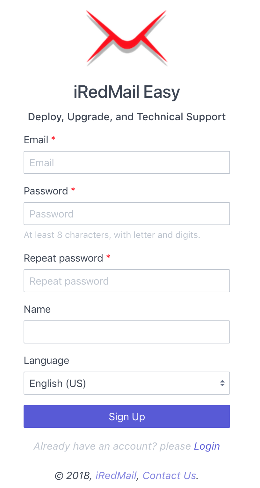
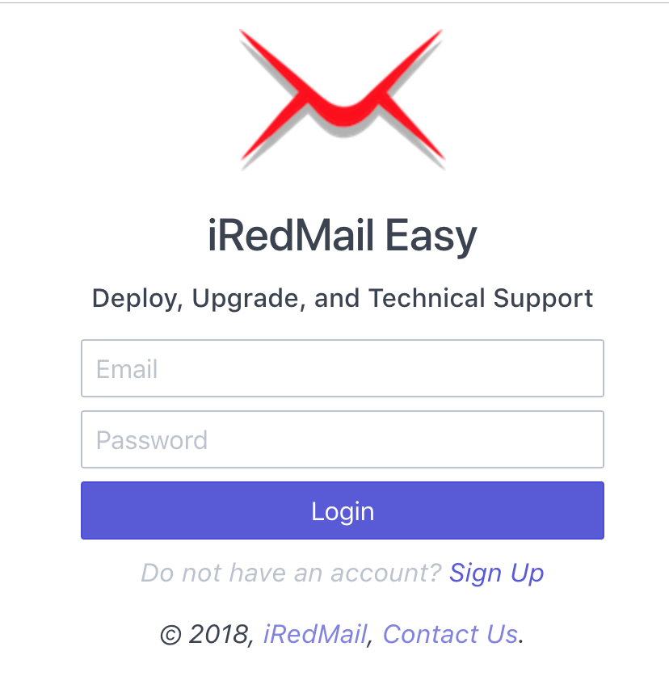
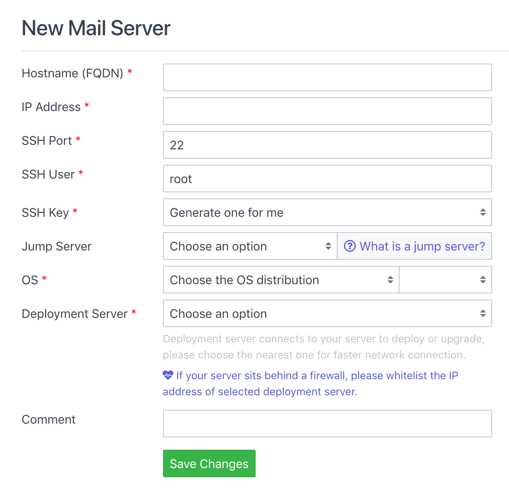
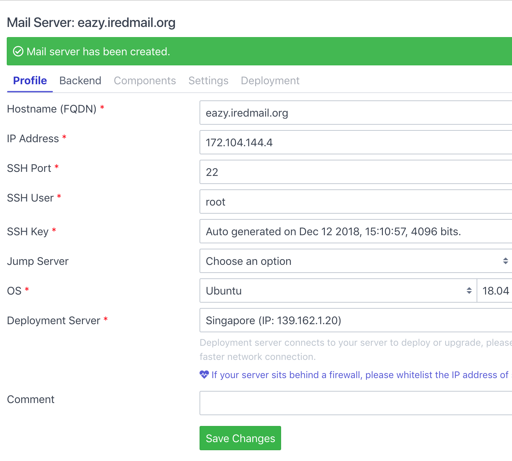
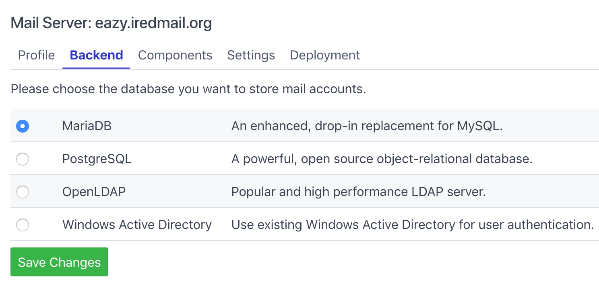
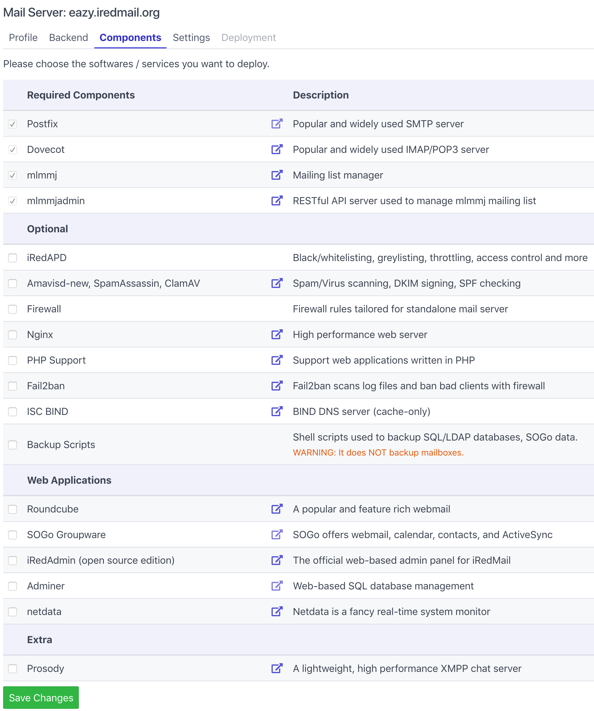
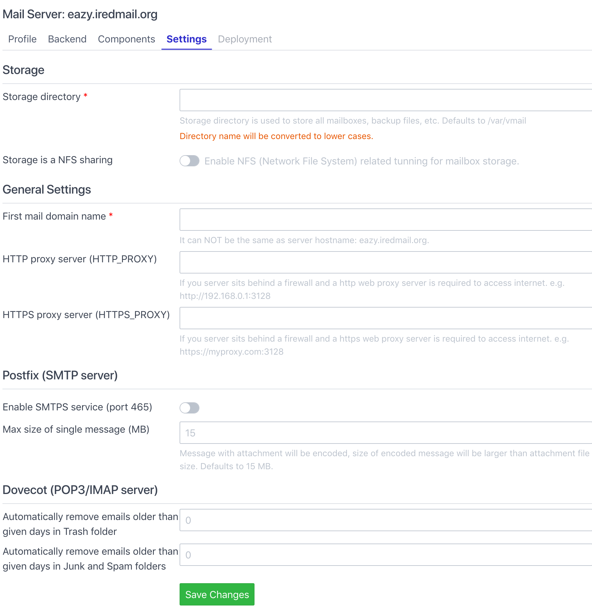
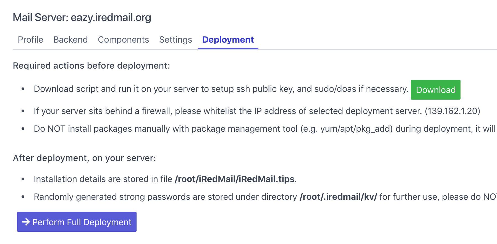
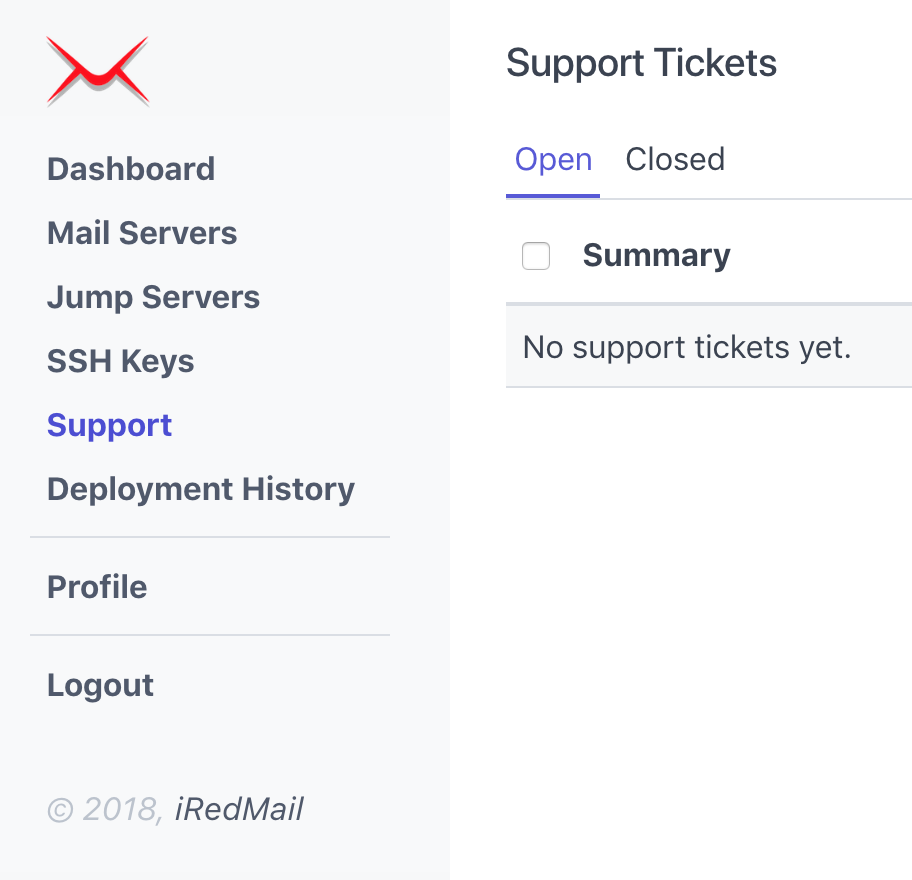
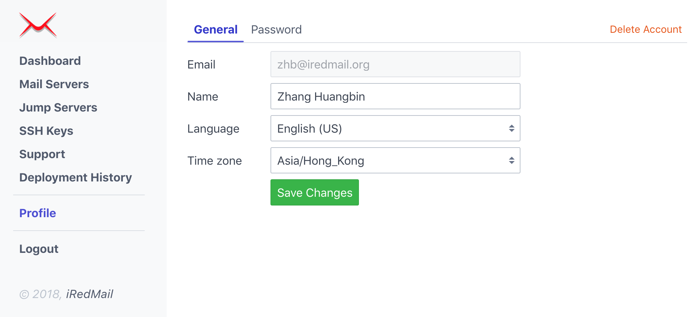

Warning
iRedMail Easy does NOT (yet) support upgrading existing server which was deployed with any downloadable iRedMail installer (e.g. iRedMail-0.9.9, iRedMail-0.9.8 and earlier releases).
iRedMail Easy is a web-based deployment and support platform. With this platform, it's easy to deploy and keep the iRedMail server up to date, easy to get the fast and professional technical support from iRedMail team.
We encourage all users to deploy new iRedMail servers with this platform and keep the servers up to date.
If you prefer classic downloadable iRedMail installer, you can find the installation guides here: Install iRedMail.
Warning
Linux/BSD distribution releases supported by iRedMail Easy:
| Distribution | Release Versions |
|---|---|
| CentOS | 7 |
| Debian | 9 |
| Ubuntu | 18.04 |
| OpenBSD | 6.4, 6.5 |
If you need to install iRedMail on FreeBSD, please use the downloadable installer instead.
2 GB memory for a low traffic production server.To deploy a mail server, you need to sign up with a valid email address first:
It will send you an email to confirm you're the owner of the email address, please click the link in the email to confirm, then login.
After signed up, you get one-month trial for free to evaluate the iRedMail Easy
platform, if you don't like it, or don't need it, feel free to remove your own
account in Profile page on the left sidebar after logged in.
Screenshots of Sign Up and Login pages:
 
After login, you will be redirected to the Dashboard page, please click the
Add a mail server button to add a new mail server.

Explanation of the form fields:
Hostname (FQDN): This is the server hostname you want to set for the mail server.
mail.example.com, mx.example.com.user@example.com) because it's used to accept email sent
to Linux/BSD system account like root user.IP Address: Public or private IP address of your mail server.
If this mail server is in internal network and can not be accessed directly from external network, you need a Jump Server (or, Bastion Server) so that our deployment server can connect to your mail server. For more details about Jump Server, please read this short tutorial: What is SSH jump server.
SSH Port: SSH service port number. Defaults to 22.
SSH User: The login username for ssh secure connection. Defaults to root.
If you use a non-root user, sudo on Linux or doas on OpenBSD is
required to gain root privilege.
SSH Key: The SSH key used to login to your mail server.
If you choose option Generate one for me, after submitted this form,
our system will generate a strong (4096 bits) SSH key for you.
OS: Choose the Linux/BSD distribution and release version of your mail
server.
Deployment Server: Please choose one deployment server from the list.
A deployment server connects to your mail server to deploy or upgrade, please choose the nearest one for faster network connection.
If your mail server sits behind a firewall, please whitelist the IP address of selected deployment server.
Comment: Add some text to help you identify this mail server.
Click the button to create mail server, after created, page will be redirected to mail server profile page. You're free to update profile here.

Click tab Backend on the mail server profile page.
A backend is a SQL or LDAP database used to store mail domains and accounts. We suggest you choose the one you're familiar with for easier maintenance.

Click tab Components on the mail server profile page.
A component is a software (or software group) which implements some network service(s). On this page you can choose the components you want to deploy on your mail server.

Click tab Settings on the mail server profile page.
Depends on the components you selected, the settings on this page may be different. Please fill all required form fields on this page.
Fields with red asterisk are required, others are optional.

Click tab Deployment on the mail server profile page.
Please run the commands displayed on this page on your mail server, it will
download a shell script to simplify ssh public key setup. If ssh login user is
not root, it will help setup sudo (on Linux) or doas (on OpenBSD) also.

After you ran the commands, it's ready to deployment. Click the button Perform Full Deployment to start the deployment.
Depends on the components you selected, and network connection speed between your server and our deployment server, it may take few minutes or even longer to finish. Please be patient.
It will refresh the page every 5 seconds and show you the latest output of deployment task, you can watch and (hopefully) have some fun. :)
If you have any question or issue, feel free to open a new support ticket, clearly explain the question or issue, support team will try to reply as soon as possible.

You can update the account profile on the Profile page:
If you do not like this platform, you can find a button on this page to remove your account.
